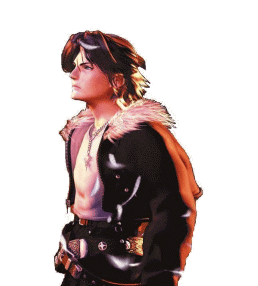

Final Fantasy VIII
Les codesLa plupart de ces infos vous les connaissez deja, mais on trouve difficilement (en ce qui me concerne) les informations de façon clair, alors je poste.
PETIT RAPPEL :
Bon apres avoir decouvert il y a environ un an sur le forum Final Fantasy VII de jeuxvideo.com , un code Action replay qui permet de passer le jeux Pal en 60 Hz, j´ai trouvé recemment par moi même la maniere de centrer l´image grâce à un autre code (appellé y-fix) - (il y a un an je n´avais rien trouvé
Alors pourquoi je vous raconte tout ça, et bien depuis j´ai entrepris de trouver la même chose pour Final Fantasy VIII. (chose difficile quand on connait pas)Malheureusement il y a un hic. Contrairement à FF7, FF8 possede un Anti Action replay et donc rend impossible tous code (cds originaux)
- Les seuls Action replay qui fonctionnent malgré ça sont :
-Action Replay Professional 3.0 et 3.1 (il faut entrer des codes Anti "anti Action replay" en premier)
-Action Replay Professional 3.2 et Action replay Professional CD(ceux là ça passe s´en problême)
- Cd CodePatch 1.0 (Ation replay sur cd, pas besoin non plus de code anti "anti action-replay"
-Je n´ai trouvé aucun code permettant de faire la même chose sur d´autre model (j´ai un Game Hunter Pro v8.0/Game enhancer )
>br/>
(Personellement je l'ai graver en 1x avec Nero, plus c'est lent mieux c'est)
Seulement pour le faire passer (puisqu´il sera graver)il faut :
-Soit avoir la ps1 pucé
-Soit avoir un game enhancer (ce que j´ai - non compatible avec la psone je crois)
-Soit Swapper
LES CODES
Codes Anti "Anti-Action Replay" Action Replay 3.0 et 3.1 uniquement
Codes qui doivent être entré en plus pour pouvoir utiliser les codes action replay avec FF8
C1000000-0000
800005F4-3800
800005F6-4080
Pour Action replay 3.2 et version cd 3.3 ainsi que le CD CodePatch v1.0 pas besoin de rentrer les codes ci dessus
8005DAD0-0000 (60 hz NTSC)
80049BA8-0000 (recentrage vers le haut Y-fix)
(code essayé avec Action Replay sur cd - CD Codepatch V1.0- )
J´ai verifier que c´était bien du 60 hz, j´ai chronométré le temps que l´on met pour aller de L´orphelinat à Balamb avec l´hydre.
50 hz environ 32 sec 688 millieme
60 hz environ 27 sec 187 millieme
Le jeux s´affiche en pleine ecran (plus de personnage ecrasé, plus de bande noire, enfin presque, une legere bande noir subsiste horisontalement en haut, mais comparé à avant c´est rien dutout)
Affichage Ntsc, donc il faut soit avoir son televiseur compatible Ntsc soit passer par la prise peritel (Scart) en RGB (ou RVB), sinon ça sera en noir et blanc.
L´ecran et presque parfaitement centrer dans sa verticalité. En revanche comme je suis obligé de passez par le rgb (qui est de toute façon de meilleur qualité j´ai toujours ce léger decalage sur la gauche, m´enfin ça, ça me la toujours fait quelque soit la console (en l´abscence de centrage dans les options des jeux ou de la console).
En revanche dans les menus, le bas est legerement tronqué on ne voit que la moitié superieur du nombre de gils que l´on a. Pour pouvoir le voir presque en entier il faut passer par les menu des boutiques lors de l´achat, rien de tres grave. A part ça je n´ai pour l´instant decelé aucun problême. (je vais voir si il y a moyen d´arranger le problême de menu mais c´est tout à fait jouable)
Je sais qu´il existe un cd pour faire passer les jeux pal en 60 hz mais je ne sais pas ce que ça donne et si ça marche bien. Ces codes sont surtout utiles pour ceux ayant deja un action replay compatible et le resultat est tres convaincant pour ce que j´en ai vu (jusqu´a la mine de souffre et une ballade en hydre au cd 4)
Bon jeux